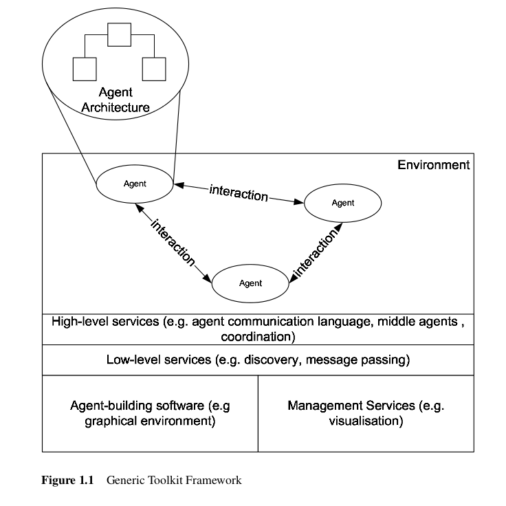

Agent-based Software Development - Chapter 3: Agent Toolkits
M. Luck, R. Ashri, M. D'Inverno
Camila Coelho Sanches
Reinaldo Nolasco Sanches
Agent Toolkits
Introdução
São características de sistemas baseados em agentes:
-
Autonomia: agentes podem iniciar e controlar ações através de papéis pré-definidos. Um agente não somente executa comandos, mas avalia e coopera com outros agentes para executá-los, delegá-los ou rejeitá-los. Agentes podem alterar seu comportamento com base em comportamentos históricos e adaptar-se a alterações no ambiente.
-
Cooperação: agentes compartilham informação e comunicam-se com outros agentes através de linguagens, protocolos e ontologias. A troca de mensagens permite a coordenação de ações com outros agentes.
-
FIPA (Foundation for Intelligent Physical Agents): padrões para o desenvolvimento de sistemas baseados em agentes.
Toolkits
Sistemas multi-agentes (MAS) utilizam mecanismos comuns de comunicação, localização (discovery), coordenação (negociação e organização) e segurança.
Toolkit: Serviços de infra-estrutura para a construção de agentes, independente do domínio da aplicação, com a separação entre agentes individuais e a arquitetura de suporte. Tipos: APIs, IDEs e plataformas middleware.
-
Middleware: software reutilizável que reside entre a aplicação e sistemas operacionais, protocolos de rede e hardware. Funciona como uma ponte entre o programa e a infraestrutura de software e hardware de baixo nível responsável por gerenciar a conexão e interoperabilidade entre componentes.
Componentes do Toolkit ZEUS
Seleção de toolkits - Critérios

ZEUS
Origem: BTExact , 1997. Aplicado a sistema de engenharia de processos e de gerenciamento de informações multimídia. Open-source.
Apresenta a solução para os seguintes problemas:
- Information Discovery: Métodos para obter informação sobre os demais agentes ("catálogo de agentes").
- Comunicação: Definição de uma linguagem comum para a troca de mensagens.
- Ontologias: Definição de um método comum para a representação das mensagens.
- Coordenação: Mecanismos comuns de coordenação (adicionais, dependem do domínio da aplicação)
- Integração com software legado: Mecanismos de interface entre agentes e programas externos.
ZEUS
ZEUS
Agentes na perspectiva do ZEUS, são: deliberativos: possuem conhecimento explícito sobre seus objetivos e ações; Dirigidos por objetivos: atuam para atingir um objetivo específico; Versáteis: podem executar mais de uma tarefa. Além disso devem basear-se em fatos ("truthful") e operar continuamente, podendo sincronizar com um relógio.
ZEUS disponibiliza utility agents, para diferenciar dos task agents (agentes da aplicação), "agentes genéricos" com as seguintes funcionalidades:
-
Discovery: mecanismos de troca de mensagens (mailbox, message handlers) e bases de dados compartilhados entre agentes: resource: info. das interfaces externas e de cada agente, e acquaintance: info. sobre os demais agentes.
-
Motor de coordenação e scheduler: selecionar objetivos e protocolos disponíveis para a interação entre agentes, planos de execução e temporização conforme objetivo. Além de definir os "peers" (papel de agentes que comunicam-se entre si), permite definir uma estrutura organizacional hierárquica ("superior/subordinate").
ZEUS
Mecanismos multi-agentes:
-
Baixo-nivel: troca de mensagens via TCP/IP (ASCII, portavel)
-
Alto-nivel: ANS (agent name server) registra os agentes que irão se comunicar mapeando o nome e a localização lógica na rede, ou requisitam a um "agente facilitador", que possui a lista das interfaces dos agentes registrados.
Comunicação: FIPA ACL (Agent Communication Language) e componente de ontologias para formulação das mensagens.
Ferramentas: editor de ontologias (criar ou importar) e de agentes (parâmetros de planos, tarefas, recursos, papéis e protocolos, e configuração de agentes-utilitários).
Monitoramento: serviços para verificar a troca de mensagens, progresso das tarefas, estado interno dos agentes e gerar estatísticas.
RETSINA
Origem: 1995 (Carnegie Mellon), multiplataforma. RETSINA: reusable environmento for task-structured intelligent network agents.
Características dos agentes para operar no RETSINA:
-
Sistemas multiagentes, que interagem via linguagem comum e ontologias.
-
Peer-to-peer: ao invés de uma abordagem centralizada de estrutura social, modelos hierárquicos devem imergir a partir de interação entre os pares.
Implementação técnica: agentes derivam de BasicAgent: mecanismos de troca de mensagens, descoberta de clientes, módulo de ciclo de vida (inicio/finalização de agentes) e timing.
Especializações pré-definidas:
- Interface agent: recebe entrada do usuário e apresenta resultados
- Task agent: executa o objetivo, formulando planos coordenados com outros agentes
- Information agent: interage com bases de dados ou páginas web para recuperar informações
- Middle agent: infraestrutura, descobrem os serviços disponíveis entre agentes.
- Matchmakers: mapeamento entre agentes e serviços (por exemplo, "brokers")
RETSINA
Mecanismos multi-agentes:
- Baixo-nivel: protocolo multicast (Simple Service Discovery Protocol) e mecanismos de segurança de autenticação e troca de chaves na comunicação (protocolo SSL).
- Alto-nível: KQML ACL. Componente ANS para registro e lookup de agentes, e dinâmico (multicasts).
- Ferramentas: integra-se ao VisualStudio. Ferramenta para edição KQML e monitoramento (logger service) da transição de estados e atividades (activity visualizer).
IMPACT
Proveniente da academia, utilizado em aplicações militares
Garantia de operação "correta" a partir de "checks" de consistência e restrições estritamente parametrizadas. Framework composto por 2 partes:
-
Código: dados e funções que manipulam dados
-
Wrapper: a função de aplicação ("inteligência") dos agentes. Componentes básicos de controle: permissões, restrições, base de ação (descrição e precondição para a execução de ações) que combinados atendem a arquitetura IMPACT. Linguagem própria: "do", "permitted", "forbidden", etc. Metaknowledge: conhecimento de outros agentes.
IMPACT
Mecanismos multi-agentes:
-
Baixo-nivel: RMI (Java) - "agent roost" (plataforma dedicada de conectividade entre agentes via RMI) e módulos de conexão a serviços externos como servidores Oracle.
-
Alto-nível: Agentes devem ser registrados nos servidores IMPACT via linguagem própria de descrição de serviços.
-
Ferramentas: IDE (ImpactDE) e visualização gráfica dos "roosts" para monitorar o estado interno dos agentes.
JADE
Origem: Italy Telecom, posteriormente Motorola. Modelo de comunicação FIPA.
Disponibiliza um conjunto de APIs para desenvolver e instalar (deploy) agentes:
- Classe comum de agentes, com mecanismos de controle do ciclo de vida no container JADE (agentes de mesmo domínio, ver figura).
- Fila de mensagens para cada agente,
- APIs para formulacao de mensagens (FIPA ACL)
- Classes de comportamento (behaviors): lista de tarefas de cada agente com metodos para incluir/remover e compor tarefas.
LEAP: ambiente JADE "lightweight" para dispositivos móveis.
JADE
Mecanismos multi-agentes:
-
Baixo-nivel: plataforma de JADE containers, "catálogo" de agentes (Agent Management System - AMS, Directory Facilitator - DF, Agent Communication Channel - ACC). Comunicação interna das plataformas via RMI, e externa via FIPA MTP (message transfer protocol).
-
Alto-nível: FIPA ACLs (visto no cap. 5), ontologias customizadas.
-
Ferramentas: UI para controlar o ciclo de vida agentes e para monitorar a troca de mensagens (agente de monitoramento remoto - sniffer e instrospector, por exemplo).
JACK
Origem
Desenvolvido pela Agent Oriented Software Group em Melbourne, Australia. JACK tem sua primeira versão em 1998. Está disponível comercialmente, com licenças especiais para fins de pesquisas. Versão de demonstração está disponível gratuitamente.
-
Agentes no JACK são agentes inteligentes que são baseados na arquitetura BDI
-
JACK Agent Language é um superset da linguagem Java, e introduz novas características semânticas e sintáticas, novas classes base, interfaces e métodos
-
JACK Compiler compila a JACK Agent language para Java puro
-
JACK Agent Kernel é o programa em real-time no qual os agentes JACK operam, e fornece a funcionalidade básica do agente que é definida dentro do JACK Agent Language
JACK
Agents
-
A classe base Agent é o artefato central da JACK Agent language. Com ela os desenvolvedores definem os beliefs, planos, eventos externos e internos e as capacidades
-
A classe Agent deve ser extendida para implementar agentes específicos da aplicação
-
Açoes agendadas dos agentes, incluindo as ações concorrentes, usa o TaskManager
-
A BeliefSet é um banco de dados de beliefs que representa as beliefs através de modelo relacional baseado em tuplas
-
Planos são seqüências de ações que os agentes executam na gravação de um evento. Cada plano no JACK corresponde a um único evento, e vários planos podem ser declarados para lidar com o mesmo evento
-
Capacidades fornece meios para a estruturação de um conjunto de elementos de raciocínio em um conjunto coerente que pode ser conectado a agentes
JACK
Multiagent Systems
Baixo-nivel
-
UDP over IP, possibilita comunicação peer-to-peer
Alto-nivel
-
A comunicação entre agentes é manipulado pelo Kernel.
-
JACK fornece suporte para a coordenação entre agentes baseados em Team Oriented Programming. Este mecanismo de coordenação vê um grupo de agentes como um todo e atribui metas para uma equipe de agentes, que coordena a sua actividade para alcançar o objetivo da equipe
JACK
Agent-Building Software
JACK fornece um ambiente de desenvolvimento gráfico. A ferramentas de design de alto nível permite que um sistema multi-agente seja projetado definindo os agentes e as relações entre eles em uma notação semelhante à UML.
Management Software
Um aplicativo pode ser monitorado através de um Agent Tracing Controller. Esta ferramenta gráfica permite que um desenvolvedor possa escolher quais os agentes rastrear e fornece uma representação visual dos agentes percorrendo os seus planos.
LIVING MARKETS
Origem
Desenvolvido pela Living Systems AG em Donaueschingen, Alemanhã. A empresa desenvolve soluções baseadas em agente desde 1996 e seu conjunto de ferramentas está sendo usado em uma variedade de configurações, incluindo processos complexos comerciais e logística.
O living markets toolkit é dividido em um servidor de agente base que lida com o questões independentes do domínio da aplicação relacionadas com o desenvolvimento baseado em agentes, e soluções específicas para mercados específicos são construídos em cima do servidor de agente.
O servidor de agente base é feito em Java e o método de comunicação padrão é RMI (remote method invocation). Suporta também padrões como XML, SSL, HTTP e CORBA.
LIVING MARKETS
Agents
De uma forma abstrata, podemos dizer que agentes no living markets são entendidos como proativos, entidades direcionadas a objetivos, capazes de executar ações e perceber o ambiente.
São especializados em quatro tipos genéricos:
-
Application agents Agentes específicos de domínio e representam a principal funcionalidade do núcleo do sistema
-
Integration agents Agentes dedicados à integração do sistema com os sistemas existentes fora do ambiente do living markets
-
Interface agents A interação com o sistema é tratada por pessoas através dos agentes de interface
-
System Agents Estes são os agentes que lidam com a gestão do próprio sistema no living markets ralizando tarefas como monitoramento de desempenho e balanceamento de carga
LIVING MARKETS
Multiagent Systems
Baixo-nivel
Os servidores LARS (living agents runtime system) fornecem um canal de comunicação dedicado que permite a comunicação entre os agentes dentro de um único servidor, bem como um roteador de mensagens especial que é capaz de enviar mensagens para outros servidores LARS.
Alto-nivel
O living markets divide os serviços necessários em quatro níveis com base na funcionalidade:
-
Agentes devem ser capazes de procurar parceiros de negócios, por produtos ou serviços
-
Prestadores de serviços e solicitações de serviços devem se combinar
-
A toolkit suporta uma gama de mecanismos de preços dinâmicos que permitem os agentes decidir sobre o preço de provisão do serviço
-
E por último, trata da compensação e liquidação de negócios apoiando liquidações físicas e financeiras
LIVING MARKETS
Agent-Building Software
O desenvolvimento de agente é feito por por um ambiente de desenvolvimento gráfico integrado, o living markets Development Suite. Este software permite a programadores de aplicações criar visualmente o agent scenarios, que representa os principais agentes no sistema e o fluxo de comunicação entre eles.
Management Software
A gestão de um sistema de living markets é dividida entre a gestão do dia-a-dia dos sistemas inteiros e uma gestão mais detalhada dos agentes e servidores. Uma interface web-based permite a administração do dia-a-dia da aplicação e um control center que permite o acesso detalhado de cada servidor LARS e os agentes que residem no servidor.
OTHER TOOLKITS
-
agentTool desenvolvida em Kansas State University com suporte a metodologia Mutliagent Systems Engineering. Esta metodologia especifica sete etapas a partir da identificação dos objetivos, e em seguida aplica os casos de uso e deriva papéis com base neles. Depois as classes de agentes são criadas, as conversas são construídas e as os agente são montados. Por fim, a implantação do sistema em geral ocorre.
-
Agent Factory foi desenvolvida no laboratorio Practice and Research in Intelligent Systems and Media (PRISM) da Universidade de Dublin. Fornece amplo suporte para o desenvolvimento através de um ambiente gráfico e uma plataforma distribuida que escala de estações de trabalho para PDAs de capacidade limitada. Os agentes são do tipo BDI.
-
BOND é um sistema multi-agent FIPA-compliant desenvolvido pela University of Central Florida. O conceito principal por trás do sistema de infra-estrutura de agente BOND é a visão dos agentes como objetos móveis ativos com algum nível de inteligência. Outra decisão importante no design é permitir a reconfiguração dinâmica de agentes para responder às novas exigências colocadas dinamicamente nas aplicações.
OTHER TOOLKITS
-
CoABS (Co-operating Agent Based Systems) é um projeto fundado pelo DARPA (Defense Advanced Research Projects Agency) com o objetivo de contruir uma infra-estrutura que permite a integração de sistemas baseados em agentes desenvolvido com outros toolkits.
-
DECAF (Distributed, Environment-Centred Agent Framework) é uma toolkit desenvolvida na University of Delaware. DECAF foca nas arquiteturas de agentes individuais, em vez de uma infra-estrutura distribuída, embora os serviços básicos de Agente Name Server sejam fornecidos.
-
Open Agent Architecture (OOA) é desenvolvido na Artificial Intelligence Center of SRI International. A comunicação e coordenação do agente é feita por agentes Facilitator especializados que podem realizar a distribuição de tarefas para outros agentes permitindo a execução de metas complexas, bem como atuar como repositórios de dados globais para os agentes.
-
Sensible Agents é desenvolvida pelo Laboratory of Intelligent Processes and Systems at the University of Texas em Austin. Fornece um ambiente distribuído para o funcionamento do agente e da comunicação. O foco principal é sobre desenvolver agentes que são capazes de ajudar nas decisões em ambiente com recursos limitados.
OTHER TOOLKITS
-
SoFAR (Southampton Framework for Agent Research) foi desenvolvido pela The Intelligence, Agents and Mutlimedia Group na Southampton University. O foco da SoFAR está em fornecer uma infra-estrutura confiável que ajuda o agente na comunicação e descoberta no domínio da gestão da informação distribuída.
Review
Review
LINKS
Comparison of agent-based modeling software - Wikipedia
http://en.wikipedia.org/wiki/Comparison_of_agent-based_modeling_software
Thank you!
Camila Coelho Sanches
Reinaldo Nolasco Sanches